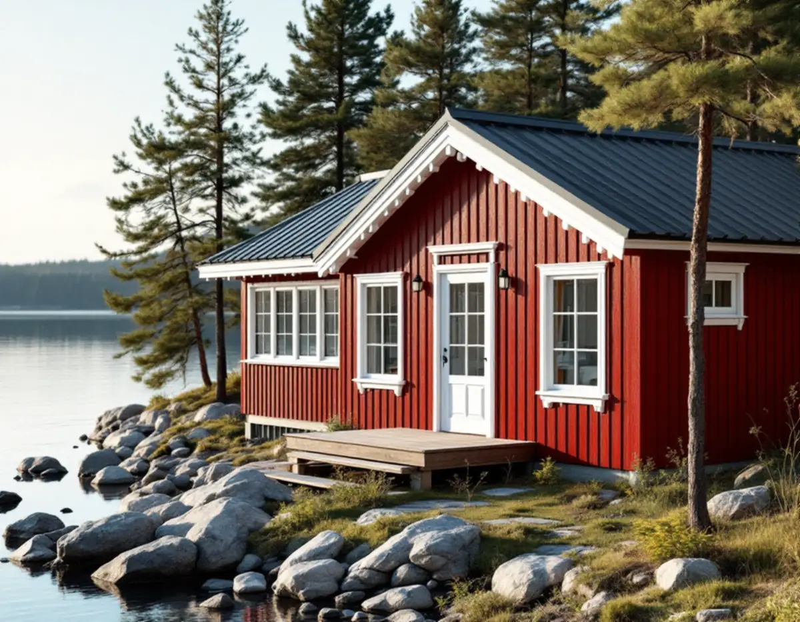
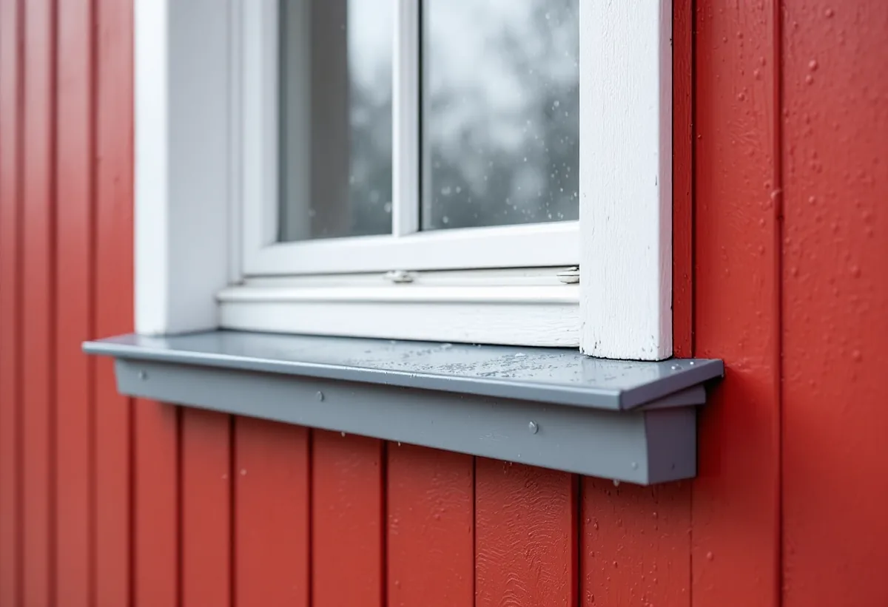

Frågor om huset
Vi går igenom kommunens frågor om husets värde och tittar i Österåkerskartan.
Österåkers kommun skriver att även enkla, vardagliga och yngre hus kan ha kulturvärden, och att fönster hör till de detaljer som kan göra ett hus värdefullt. Samtidigt står husen i skärgården ofta öppet mot vind och regn, som sliter på fönstren. Geal Entreprenad AB byter och renoverar fönster i hela Österåker och lämnar ett skriftligt kostnadsförslag efter ett gratis platsbesök.

På sin sida om kulturhistoriska byggnader skriver Österåkers kommun att varsamhetskravet gäller alla byggnader och alla ändringar oberoende av husets ålder. Det gäller både invändigt och utvändigt, och oberoende av om åtgärden kräver bygglov eller anmälan. Varsamheten kan enligt kommunen avse färgsättning, byggnadens proportioner och detaljer.
Kommunen påpekar också att det inte bara är slott och äldre byggnader som har kulturvärden. Även enkla, vardagliga byggnader och yngre bebyggelse kan ha det. För ett fönsterbyte betyder det att frågan om indelning, profiler och kulör finns med även när huset är byggt på 1970- eller 80-talet och bytet i övrigt är lovfritt.
Den som vill ha ett formellt besked kan enligt kommunen söka bygglov frivilligt, även när det inte krävs. Kommunen nämner att det kan vara en fördel om man planerar att sälja fastigheten.

Kommunen har en lista med frågor för den som vill veta om huset kan vara värdefullt. Finns det en detaljplan med skyddsbestämmelser för huset? Ligger det i eller nära ett kulturmiljöområde i Österåkerskartan? Finns huset med i en inventering eller ett kulturmiljöprogram? Har det en bevarad, tidstypisk karaktär eller bevarade byggnadsdetaljer, till exempel fönster? Svarar man ja på en eller flera frågor kan huset vara värdefullt.
Om fastigheten ligger inom ett kulturhistoriskt särskilt värdefullt område, eller om byggnaden är särskilt värdefull, behöver du söka bygglov för att ändra fasaden. Kommunen skriver att även små ändringar kan påverka en känslig byggnad och att Bygglovenheten bör kontaktas innan arbetet börjar.
Kommunen förklarar också beteckningarna i detaljplanen: ett litet k innebär att byggnaden ska behandlas varsamt och ett litet q att den inte får rivas. Står någon av dem för huset är det ett tydligt tecken på att fönstren bör behålla sitt utseende.
Från den 1 december 2025 skärptes reglerna för särskilt värdefulla byggnader och bebyggelseområden. Österåkers kommun skriver att det i sådana miljöer införs eller behålls en utökad lovplikt, och att förvanskningsförbudet skyddar de egenskaper och karaktärsdrag som gör bebyggelsen särskilt värdefull, både interiört och exteriört.
Inför en bygglovsansökan kan en antikvarisk förundersökning behövas. Den beskriver byggnadens kulturvärden och karaktärsdrag och hur de påverkas av åtgärden. Kommunen skriver att det för mindre åtgärder kan räcka med ett enklare antikvariskt utlåtande, och att en kontrollansvarig för kulturvärden kan behövas i samband med bygglovet.
Ett fönsterbyte på ett värdefullt hus är ofta en sådan mindre åtgärd. Vi tar fram mått, foton och en beskrivning av de befintliga fönstren, så att den antikvariska bedömningen har något konkret att utgå från.
Boverkets energiguide råder att man innan fönstren byts utreder om det finns fuktskador i väggarna och om det befintliga eller nya fönstret behöver kompletteras med fuktskydd. På ett hus som står öppet mot en fjärd eller på en udde tittar vi därför särskilt på bröstningen, fönsterbänken och att fönsterblecket har fall ut från väggen.
Boverket påminner också om underhållet: vissa material kräver mer regelbunden skötsel än andra, men framför allt bör man välja material som går att underhålla så att fönstren får lång livslängd. Ett fönster som går att skrapa, laga och måla om håller ofta längre i ett utsatt läge än ett som måste bytas när ytan har gett med sig.
Behöver panelen runt fönstren ses över samtidigt finns mer under fasadrenovering i Österåker, och för foder och snickerier inne under snickare i Österåker.
Vi går igenom kommunens frågor om husets värde och tittar i Österåkerskartan.
Fönster, bröstningar och bleck kontrolleras och de befintliga fönstren mäts och fotograferas.
Behövs lov eller ett antikvariskt utlåtande tar vi fram mått och beskrivning av fönstren.
Renovering, nya fönster, glas, bleck och montage står var för sig i ett skriftligt förslag.
Fönstren sätts in med drevning, tätning och fuktskydd under fönstret.
Vi visar hur fönstren ska skötas för att klara vind och väder.
I ett småhus räknar Skatteverket det som rotarbete att reparera eller byta ut fönster, byta fönsterbleck och måla fönster. Avdraget gäller även ett fritidshus som du äger och använder. Det är 30 procent av arbetskostnaden, högst 50 000 kr per person och år och högst 75 000 kr tillsammans med rutavdrag.
Material, resor och utrustning ingår inte. Geal drar avdraget direkt på fakturan.
Antal fönster, om de kan renoveras eller behöver bytas, om indelning och profiler ska tillverkas efter förlaga, om underlag för lov eller antikvarisk bedömning behövs och hur mycket bröstningar och bleck som ska lagas. Hus på öarna kräver båt- eller färjeresor. Efter ett gratis platsbesök får du ett skriftligt kostnadsförslag.
Byta eller renovera fönster.
Fönsterbyte i Stockholm →Takbyte, takbesiktning och plåtarbeten.
Takläggare i Österåker →Svinninge, sommarvillor och sportstugor.
Takrenovering i Österåker →Uthyrning, kulturmiljö och fornlämningar.
Attefallshus i Österåker →VA-utbyggnad, öar och vattensmarta val.
Badrumsrenovering i Österåker →Rivning, markarbete och gatukostnader.
Byggföretag i Österåker →Sommarvillornas fasadkulörer.
Fasadmålning i Österåker →Skärgårdshus, fritidshus och villor i Österåker.
Fasadrenovering i Österåker →Sommarvillorna i Svinninge.
Fönsterrenovering i Österåker →Jämna golv och färre trösklar.
Golvläggare i Österåker →Golv i sommarhus som blivit bostad.
Golvslipning i Österåker →Helårshus, brunn och avlopp.
Köksrenovering i Österåker →Sommarvillor, röda stugor och efterkrigsvillor.
Målare i Österåker →Plåtdetaljer på sommarvillorna.
Plåtslagare i Österåker →Bryggor, altaner och äldre snickerier.
Snickare i Österåker →Lertegel, lovfrågan och återbruk av pannor.
Takbyte i Österåker →Sommarvillan blir åretruntbostad.
Tapetsering i Österåker →Grannmedgivande, strandskydd och utstakning.
Tillbyggnad i Österåker →Fritidshuset, värmen och anmälan.
Totalrenovering i Österåker →